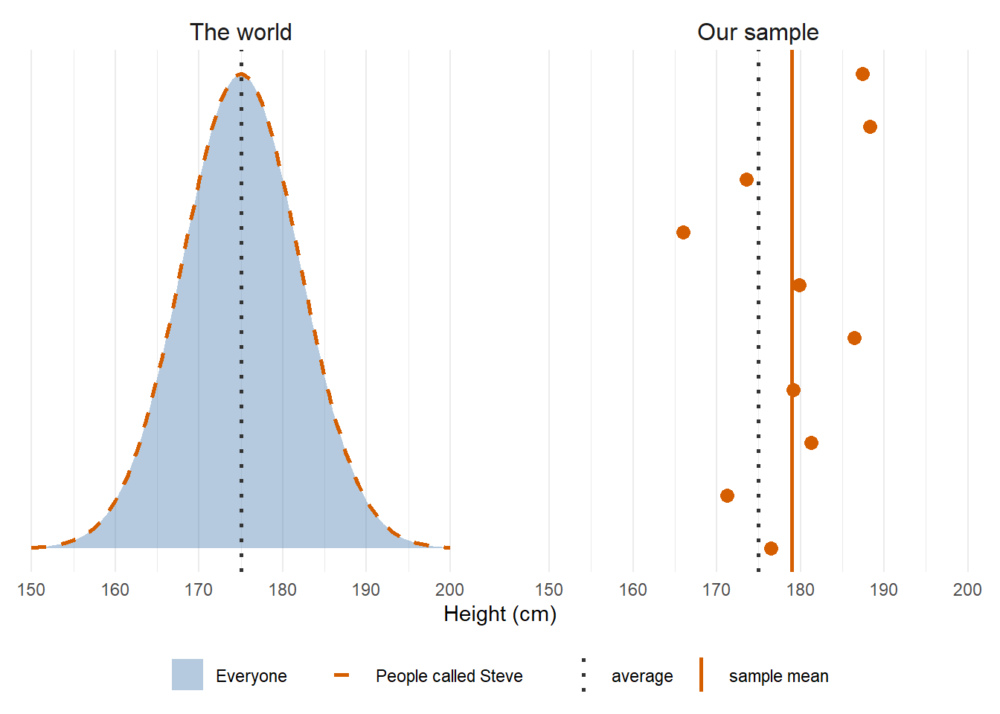
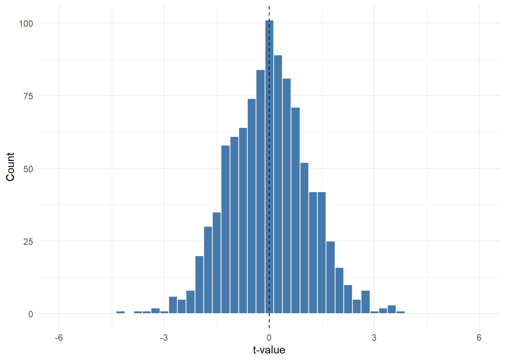

10 Null Distributions
10.1 How Far Is Far Enough?
In Chapter 4, the ten scores sat about one standard error from 49 (t = 0.95) and nearly four standard errors from 46 (t = 3.79). The second t-value feels more convincing, but how far is far enough?
To answer that, we need to know what t-values look like when there is no real difference: when the population mean really is equal to the comparison value. That is the null hypothesis, and the spread of t-values we get when it is true is the null distribution. We will build it the way we built the distribution of sample means in Chapter 3: take lots of samples and keep a result from each.
sample -> group mean -> t-value -> repeat many times -> null distribution -> which values are rare?
10.2 Files For This Chapter
Download the exercise file for this chapter and save it in the same folder as your my_functions.R:
10.3 Load Your Toolbox
This chapter leans on my_mean() and my_t_value(). Check them first on the ten scores from Chapter 4:
scores <- c(44, 47, 48, 49, 50, 50, 51, 52, 53, 56)
all.equal(my_mean(scores), mean(scores))
all.equal(my_t_value(scores, 49), unname(t.test(scores, mu = 49)$statistic))## [1] TRUE
## [1] TRUE10.4 A World Where The Null Is True
In real research we never know whether the null hypothesis is true. In a simulation, we can make it true on purpose.
Take a made-up question: are people called Steve taller than average? Picture a world where they are not. In the figure below, everyone's height has a mean of 175 cm and an SD of 7 cm, and Steves have exactly the same distribution. The heights are made up, but realistic for adults.

Figure 10.1: Left: in this world, the heights of people called Steve (dashed) match everyone's heights (filled) exactly. Right: a random sample of 10 Steves from that world. The heights are made up but realistic.
set.seed(4)
steves <- tibble(
height = rnorm(n = 10, mean = 175, sd = 7),
y = 1:10,
panel = "Our sample"
)
world <- tibble(height = seq(150, 200, by = 0.5)) %>%
mutate(density = dnorm(height, mean = 175, sd = 7), panel = "The world")
mean_lines <- tibble(
panel = c("The world", "Our sample", "Our sample"),
height = c(175, 175, mean(steves$height)),
line = c("average", "average", "sample mean")
)
ggplot() +
geom_area(data = world, aes(x = height, y = density, fill = "Everyone"),
alpha = 0.4) +
geom_line(data = world, aes(x = height, y = density,
colour = "People called Steve"),
linetype = "dashed", linewidth = 1) +
geom_point(data = steves, aes(x = height, y = y),
size = 3, colour = "#D55E00") +
geom_vline(data = mean_lines, aes(xintercept = height, linetype = line),
colour = c("grey20", "grey20", "#D55E00"), linewidth = 0.9) +
facet_wrap(~ factor(panel, levels = c("The world", "Our sample")),
scales = "free_y") +
scale_fill_manual(NULL, values = c("Everyone" = "#467AAC")) +
scale_colour_manual(NULL, values = c("People called Steve" = "#D55E00")) +
scale_linetype_manual(NULL, values = c("average" = "dotted",
"sample mean" = "solid")) +
guides(
fill = guide_legend(order = 1),
colour = guide_legend(order = 2),
linetype = guide_legend(
order = 3, override.aes = list(colour = c("grey20", "#D55E00"))
)
) +
scale_y_continuous(NULL, breaks = NULL) +
labs(x = "Height (cm)") +
theme_minimal() +
theme(legend.position = "bottom", strip.text = element_text(size = 12),
panel.spacing = unit(2, "lines"))In this world, Steves are exactly average. That is what the null hypothesis says: there is no difference between Steves and everyone else. But the 10 Steves in our sample have a mean height of 179 cm, about 4 cm above average. Nothing makes Steves taller here. The gap comes purely from which 10 Steves happened to end up in the sample: sampling noise.
A one-sample t-test would compare our sample mean with 175. So the real question is: how big a gap can sampling noise produce on its own, when the null hypothesis is true?
This chapter answers that by simulating the Steve world directly. rnorm() draws random values from a normal population. Here it draws a new group of 10 Steves, with heights from a population with a mean of 175 cm and an SD of 7 cm, and we calculate their t-value against 175:
null_sample <- rnorm(n = 10, mean = 175, sd = 7)
null_sample
my_t_value(null_sample, comparison_value = 175)## [1] 171.0767 173.3888 185.9110 175.4936 175.9050 187.0055 178.2264 166.1446
## [9] 170.1920 171.8804
## [1] 0.2474218Run that chunk a few times. The heights change every time, and so does the t-value, even though nothing is going on: Steves are exactly average. The heights are in centimetres. The t-value makes the same comparison, the sample mean against 175, but measures the gap in standard errors: a t-value of 2 means the group's mean height is two standard errors above 175.
10.5 Many Groups Of Steves
One group of 10 is a single draw. The widget below draws group after group from the same world. The top panel is the world, the middle panel is the latest group of 10 Steves, and each group's mean drops into the histogram at the bottom.
- Click +1 a few times. Watch each group of Steves, its mean, and where that mean lands.
- Click +10, then +100. Compare the spread of the group means with the spread of individual heights in the top panel.
- Tick Expected shape, and compare SD of the means with Formula SE.
Here is the same thing in R, with replicate() as in Chapter 3: 1000 groups of 10 Steves, keeping each group's mean height.
null_means <- replicate(1000, mean(rnorm(n = 10, mean = 175, sd = 7)))
c(sd_of_means = my_sd(null_means), formula_se = 7 / sqrt(10))## sd_of_means formula_se
## 2.309920 2.213594The group means bunch up far more tightly than individual heights. Individual Steves spread with an SD of 7 cm, but the group means spread by only about 2.3 cm: the standard error from Chapter 3, 7 / √10 = 2.21 cm.
A few groups still land well away from 175, though: the tallest of the 1000 groups averaged 182.4 cm and the shortest 167.7 cm. Every one of them came from a world where Steves are exactly average.
10.6 One Group, One t-Value
Group means are in centimetres. A t-value makes the same comparison, the group mean against 175, but measures the gap in standard errors. The widget below works out one group's t-value step by step.
- Click Sample to draw a group of 10 Steves. Watch the mean, SD and standard error fill in.
- Click Calculate t to finish the equation.
- Click Add t to put the t-value in the histogram.
- Repeat a few times. Most t-values land near 0, and now and then one lands further out.
10.7 Your Turn: Write my_null_t()
Now do the same in R. Wrap the steps from the one-sample chunk above in a function, so we can repeat them easily. It needs three inputs: the sample size, and the mean and SD of the population.
- draw a sample with
rnorm(); - calculate its t-value with
my_t_value(), using the population mean as the comparison value.
Using the population mean as the comparison value is what makes the null hypothesis true.
my_null_t <- function(n, pop_mean, pop_sd) {
sample_values <-
output <-
return(output)
}
my_null_t(n = 10, pop_mean = 175, pop_sd = 7)sample_values uses rnorm(n = n, mean = pop_mean, sd = pop_sd), and output uses my_t_value(sample_values, comparison_value = pop_mean).
10.8 Check It Against R
Because my_null_t() uses random numbers, every run gives a different answer. To check it, we can make R repeat the same random numbers with set.seed(). With the same seed, my_null_t() should give exactly the same t-value as R's own t.test() on the same random sample:
set.seed(1)
mine <- my_null_t(n = 10, pop_mean = 175, pop_sd = 7)
set.seed(1)
r_version <- unname(
t.test(rnorm(n = 10, mean = 175, sd = 7), mu = 175)$statistic
)
c(mine = mine, R = r_version)
all.equal(mine, r_version)## mine R
## 0.5355745 0.5355745
## [1] TRUE10.9 Many t-Values
Now repeat it 1000 times with replicate():
null_ts <- replicate(1000, my_null_t(n = 10, pop_mean = 175, pop_sd = 7))
Figure 10.2: 1000 t-values from groups of 10 Steves in a world where the null hypothesis is true.
ggplot(tibble(t = null_ts), aes(x = t)) +
geom_histogram(binwidth = 0.25, colour = "white", fill = "#467AAC") +
geom_vline(xintercept = 0, linetype = "dashed") +
coord_cartesian(xlim = c(-6, 6)) +
labs(x = "t-value", y = "Count") +
theme_minimal()This is the null distribution of t for samples of 10. Each t-value is one group of 10 Steves, compared with 175 and measured in standard errors instead of centimetres. Notice its shape:
- it is centred on 0, because on average the sample mean is right on the population mean;
- most t-values are between about -2 and 2;
- a few land further out, in both directions, even though the null is true.
Measuring in standard errors has a useful side effect. The null distribution of t has the same shape whatever the mean and SD of the population, as long as the sample size is the same: groups of 10 Steves, or of any other 10 values, give the same null distribution. The next chapter relies on that.
Which t-values are common, and which are rare? The widget below builds 1000 null t-values at a time. The slider picks out the rarest share of them, split between the two tails, so you can ask: how rare is this range of values?
- Click Regenerate a few times. The details change every time, but the shape stays the same.
- Move the slider. The orange values are the rarest ones, and the sentence under the plot says where they start.
- How far from 0 do you have to go before only the rarest 5% are left? Is it the same after you regenerate?
10.10 Where Do The Rare Values Start?
To find where the rarest values start in our own null_ts, put the t-values in order. sort() arranges a set of values from smallest to largest. head() shows the first six values and tail() the last six:
## [1] -4.221605 -3.804175 -3.457133 -3.216405 -3.127210 -2.912330
## [1] 3.175966 3.213064 3.440497 3.500087 3.539294 3.856698Say we want to mark the rarest 5% of our 1000 t-values. 5% of 1000 is 50, so 25 in each tail:
- the lower cutoff is the 26th smallest t-value, so 25 values are below it;
- the upper cutoff is the 975th, so 25 values are above it (1000 - 975 = 25).
Square brackets pick out a value by its position: sorted_ts[1] is the smallest t-value and sorted_ts[1000] is the largest.
10.10.1 Your Turn: Pick Them Out By Position
Use square brackets to pick the two cutoffs out of sorted_ts:
lower <-
upper <-
c(lower = lower, upper = upper)Put the position inside the square brackets: sorted_ts[26] for lower. Which position holds upper?
lower <- sorted_ts[26]
upper <- sorted_ts[975]
c(lower = lower, upper = upper)## lower upper
## -2.115202 2.239352
10.10.2 Your Turn: Write my_cutoffs()
The positions 26 and 975 only work for 1000 t-values and the rarest 5%. A function can work them out for any number of t-values and any share. Its second input, alpha, is the share of values we're marking as rare: alpha = 0.05 marks the rarest 5%. The next chapter explains alpha properly.
- sort the t-values;
- count them with
length(); - work out
k, the number of values in each tail; - the lower cutoff is in position
k + 1, and the upper cutoff is in positionn - k.
my_cutoffs <- function(null_ts, alpha = 0.05) {
sorted <-
n <-
k <-
lower <-
upper <-
output <- c(lower, upper)
return(output)
}
my_cutoffs(null_ts)sorted is sort(null_ts) and n is length(sorted).
k is floor(n * alpha / 2). With 1000 values, 1000 * 0.05 / 2 is 25. floor() rounds down to a whole number, because a position has to be a whole number: with 990 values, 990 * 0.05 / 2 is 24.75, and floor() makes it 24.
lower is sorted[k + 1] and upper is sorted[n - k]. With 1000 values, those are positions 26 and 975, the same as before.
my_cutoffs <- function(null_ts, alpha = 0.05) {
sorted <- sort(null_ts)
n <- length(sorted)
k <- floor(n * alpha / 2)
lower <- sorted[k + 1]
upper <- sorted[n - k]
output <- c(lower, upper)
return(output)
}
my_cutoffs(null_ts)## [1] -2.115202 2.239352You should get the same two values you picked out by position. Notice the default, alpha = 0.05, just like the defaults in Chapter 1.
10.10.3 See The Rare Values
Here is a plotting script to try different shares. Set alpha_choice to 0.5, 0.1, 0.05 and 0.01, and run it each time. The orange bars are the t-values beyond the cutoffs, the dashed lines are the cutoffs, and the table counts the orange values. | means "or", so rare is TRUE for a t-value below the lower cutoff or above the upper one.
alpha_choice <- 0.05
rare_cutoffs <- my_cutoffs(null_ts, alpha = alpha_choice)
null_t_data <- tibble(t = null_ts) %>%
mutate(rare = t < rare_cutoffs[1] | t > rare_cutoffs[2])
ggplot(null_t_data, aes(x = t, fill = rare)) +
geom_histogram(binwidth = 0.25, colour = "white") +
geom_vline(xintercept = rare_cutoffs, linetype = "dashed") +
scale_fill_manual(values = c("FALSE" = "#467AAC", "TRUE" = "#D55E00"),
guide = "none") +
coord_cartesian(xlim = c(-6, 6)) +
labs(x = "t-value", y = "Count") +
theme_minimal()Figure 10.3: The null t-values, with the rarest 5% (alpha_choice = 0.05) in orange and dashed lines at the cutoffs.
| beyond | share |
|---|---|
| 50 | 0.05 |
With alpha_choice = 0.05, exactly 50 of the 1000 t-values are beyond the cutoffs, 25 in each tail: that is how we chose them. As the share gets smaller, the cutoffs move outwards, and only t-values further from 0 count as rare.
10.10.4 Compare With R
R's qt() gives the cutoffs for the exact t distribution, which for samples of 10 has 9 degrees of freedom:
tibble(
cutoff = c("lower", "upper"),
simulated = my_cutoffs(null_ts),
qt = qt(c(0.025, 0.975), df = 9)
)| cutoff | simulated | qt |
|---|---|---|
| lower | -2.115202 | -2.262157 |
| upper | 2.239352 | 2.262157 |
They are close, but not identical. Your cutoffs come from 1000 random samples, so they wobble a little every time you build a new null_ts, just like a sample mean wobbles around the population mean.
10.11 Rare, But Not Impossible
Back to the groups of Steves. If Steves really are average, groups of 10 that come out particularly tall or short are rare. Of the 1000 group means in null_means, only 14 averaged more than 180 cm, and only 16 averaged less than 170 cm. The tallest 25 groups, the top 2.5%, all averaged more than 179.5 cm.
Groups like those are rare enough that, if we ran the study once and got one of them, we might start to wonder whether something is going on with Steves. But there is no believable reason for Steves to be taller than anyone else. So even if our one group came out unusually tall, a fluke is still the better explanation.
Now picture a different study: people who were exposed to a certain toxin while they were growing up, compared with the average height. Suppose that group comes out unusually short. The result is exactly as rare as an unusually short group of Steves would be. What differs is the alternative. A toxin that affects growth is believable, so "something is going on" becomes a better explanation than a fluke.
There is a catch too. With the rarest 5% marked, 5% of null t-values land past the cutoffs. Check 100 different first names that are all truly average, and about 5 of them will look unusually tall or short from noise alone.
10.12 Add To Your Toolbox
Copy your finished my_null_t() and my_cutoffs() into your my_functions.R file, under the Null Distributions heading, and save it.
The steps are the same as in Chapter 2:
- Open
my_functions.Rfrom the Files pane. - Copy each finished function from your exercise file, from its first line down to its closing
}, and paste it under the Null Distributions heading. - Save the file.
# Null Distributions -------------------------------------------------------
my_null_t <- function(n, pop_mean, pop_sd) {
sample_values <- rnorm(n = n, mean = pop_mean, sd = pop_sd)
output <- my_t_value(sample_values, comparison_value = pop_mean)
return(output)
}
my_cutoffs <- function(null_ts, alpha = 0.05) {
sorted <- sort(null_ts)
n <- length(sorted)
k <- floor(n * alpha / 2)
lower <- sorted[k + 1]
upper <- sorted[n - k]
output <- c(lower, upper)
return(output)
}The rest of your file depends on which chapters you have done so far.
Then check that the saved file works on its own. This is the last chunk of the exercise file:
rm(list = ls())
source("my_functions.R")
set.seed(1)
mine <- my_null_t(n = 10, pop_mean = 175, pop_sd = 7)
set.seed(1)
r_version <- unname(
t.test(rnorm(n = 10, mean = 175, sd = 7), mu = 175)$statistic
)
all.equal(mine, r_version)
# 20:1 counts down from 20 to 1; with alpha = 0.1, one value is in each tail
all.equal(my_cutoffs(20:1, alpha = 0.1), c(2, 19))You should see two TRUEs:
[1] TRUE
[1] TRUE10.13 Where This Goes Next
values -> group mean -> t-value -> many null t-values -> where the rare values start
The next chapter, Chapter 11, puts a number on "rare".